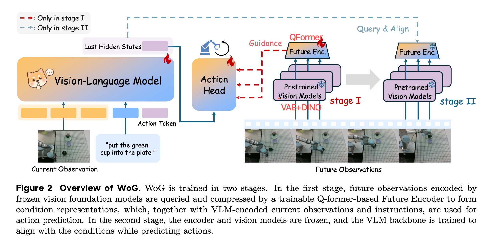
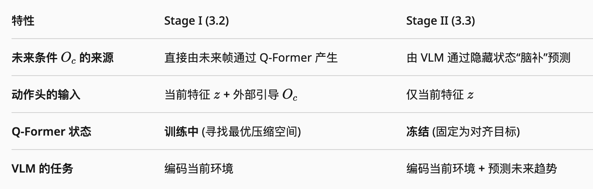
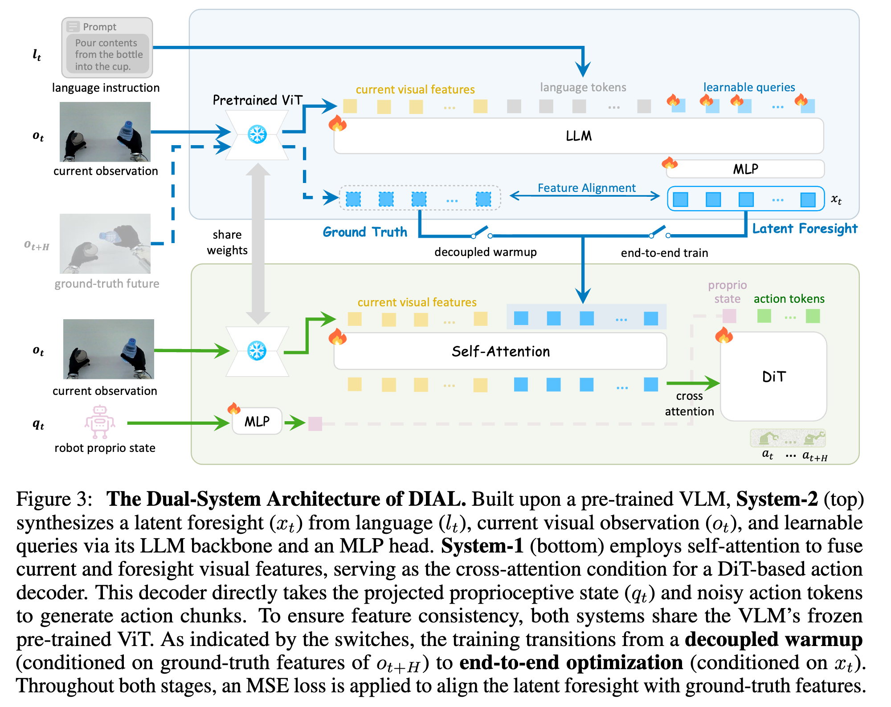

World Model 07
WoG 与 DIAL：把未来压进条件空间
WoG 和 DIAL 都不满足于“预测未来再给动作头看”。它们把未来变成更紧凑的条件或 latent intent， 直接服务动作生成。
WoG：condition space 里的世界建模
WoG 的判断是：视频预测太重，纯 latent action 又太轻。它用 QFormer 之类的 future encoder 把未来观察压成 action head 可消费的条件，让模型同时预测未来条件和动作。


DIAL：latent intent bottleneck
DIAL 把系统拆成 System-2 和 System-1：VLM 先在自身特征空间里合成 latent visual foresight， 这个 foresight 作为意图瓶颈；轻量 System-1 再根据当前观察和意图解码低层动作。

代码视角
两者都可以看成给 action generator 增加一个未来条件变量。区别在于 WoG 更像 condition prediction， DIAL 更像 VLM feature space 里的结构化瓶颈。
# Stage 1: future-guided warmup
future_cond = future_encoder(future_obs)
pred_cond, pred_action = policy(obs, instruction, teacher_cond=future_cond)
loss = action_loss(pred_action, action) + cond_loss(pred_cond, future_cond)
# Stage 2: internalized inference
pred_cond = policy.predict_condition(obs, instruction)
pred_action = action_decoder(obs, pred_cond)
loss = action_loss(pred_action, action)实现重点
- 条件瓶颈不能太宽，否则等价于搬运未来图像；也不能太窄，否则丢掉精细动作需要的信息。
- 两阶段训练能稳定优化：先用真未来带路，再让模型在推理时自己生成条件。
- 如果条件空间学得好，推理时不需要额外预测未来帧，延迟比显式视频 rollout 低。
Insight
这条路线的核心不是“有没有世界模型”，而是“世界模型的输出是不是刚好喂给动作生成”。未来被压成条件后， 它不再是可观看的结果，而是控制系统内部的意图变量。